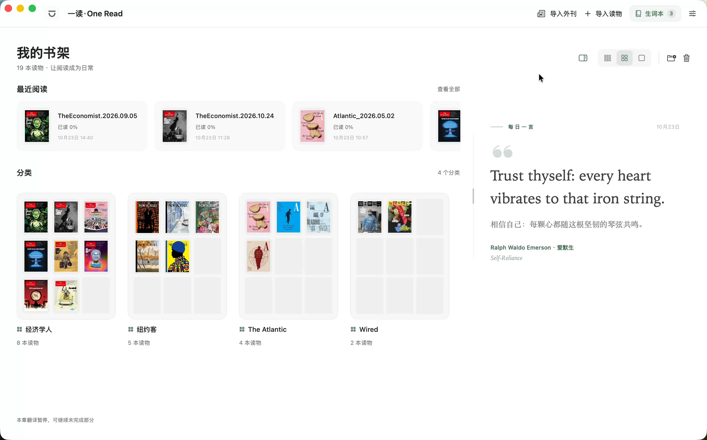

01 / THE LEARNER备考学生
为更进一步
备考高考、四级、六级或考研，用真实语境积累词汇、拆解长难句，练习英语精读。
A new page.
A wider world.
你的英语外刊专属阅读器。
让眼光走出去，让每一次阅读更进一步。

从一篇外刊到一个新词，七个演示场景。
让翻译、理解与积累，自然发生。
横向滑动，可观看完整 Mac 界面。
四种外刊，一个入口。选择刊物和期号，导入后即可开始阅读。
从时事到人文，从科技到生活。
选一个好奇的方向，开始今天的阅读。
内置四刊导入入口 · 期号与可用资源以来源仓库为准
看看如何导入为下一场考试，也为自己的好奇心。
把阅读，变成可以持续的日常。
备考高考、四级、六级或考研，用真实语境积累词汇、拆解长难句，练习英语精读。
想提升英语阅读水平，也想通过外刊了解外面的世界。在不同的观点里，拓宽自己的视野。
寻找一款舒适的英文阅读器，导入自己的 PDF 或 EPUB，让翻译与生词积累陪伴原版阅读。
选一台习惯的设备，
留一点时间给阅读。
在桌面，延续专注。
在途中，随手读一页。
正式发布后，将在这里开放下载。
下载 Mac 版，移入应用程序。
选择一期外刊，或导入 PDF / EPUB。
配置翻译服务，体验双语与解析。
设备、服务与数据，
在开始之前，心里有个底。
下载 Mac 版，将应用移入“应用程序”。导入本地 PDF / EPUB，或从“导入外刊”选择期刊。在设置中填写自己的 API Key，或配置已登录的本地 Agent，即可使用翻译与解析。保存的原文和译文可离线阅读。
当前安装包适用于 macOS 14 及以上的 Apple Silicon Mac；Windows 与 Android 版即将上线，正式发布后将在下载区开放入口。支持 DeepSeek、OpenAI、Gemini、通义千问等服务及自定义 API，也可检测本地 Agent。没有内置共享 Key，费用由所选服务决定。
应用启动时按缓存时效检查仓库新刊，由你决定是否导入；受来源仓库和网络可用性影响。在设置中配置墨墨开放 API Token 后，可将生词追加同步至云词本，分类和归档不影响同步范围。
书库、图片、译文和生词保存在本地可配置目录，密钥保存在 macOS 钥匙串。翻译会向所选服务发送文字与必要上下文。当前构建尚未经 Apple 公证；核对下载来源后，可在“系统设置 → 隐私与安全性”查看系统提供的打开选项。
感谢开源，也感谢分享。
好的阅读体验，来自许多人的积累。
上述项目未参与或背书 OneRead。交互演示参考本机操作重建，示例内容为预设数据；演示中的文章、插图与封面版权归各权利人。AI 释义与解析可能有误；考试标签基于社区参考词表。